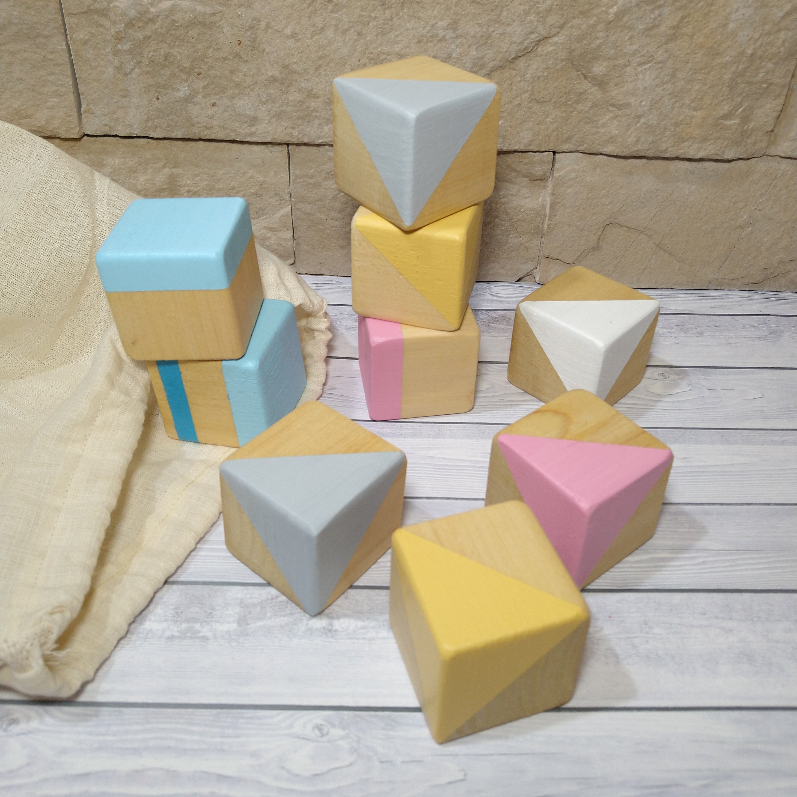
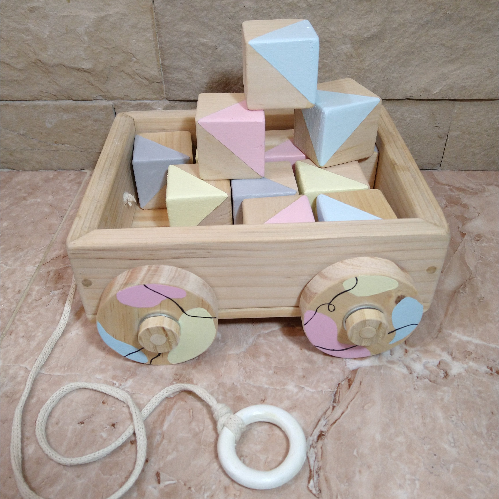
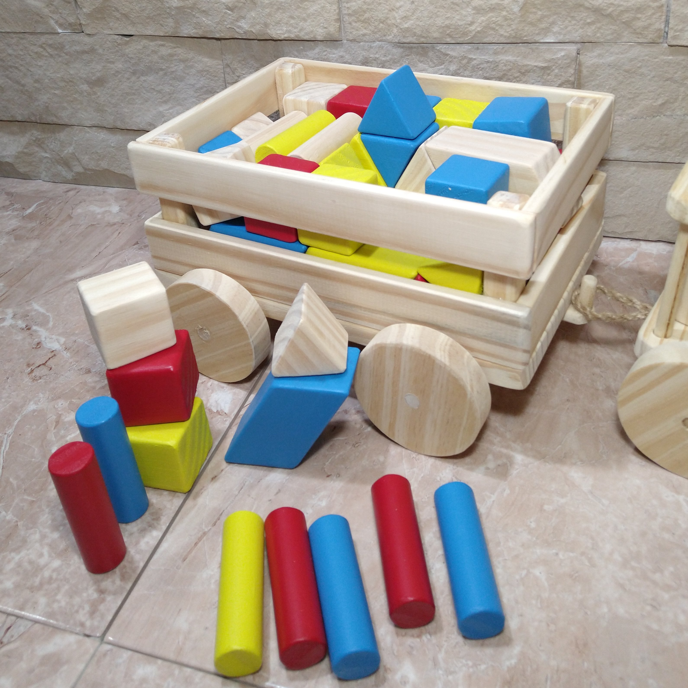

Bloques de Madera
Los bloques son un gran aliado para el desarrollo de los más pequeños ya que cuentan con múltiples beneficios.
Bajo su apariencia básica, los bloques probablemente sean el juguete más polivalente de todos los tiempos.

Bloques
A partir de los 12 meses

Cajon con bloques
A partir de los 12 meses

Vagón con bloques
A partir de los 12 meses